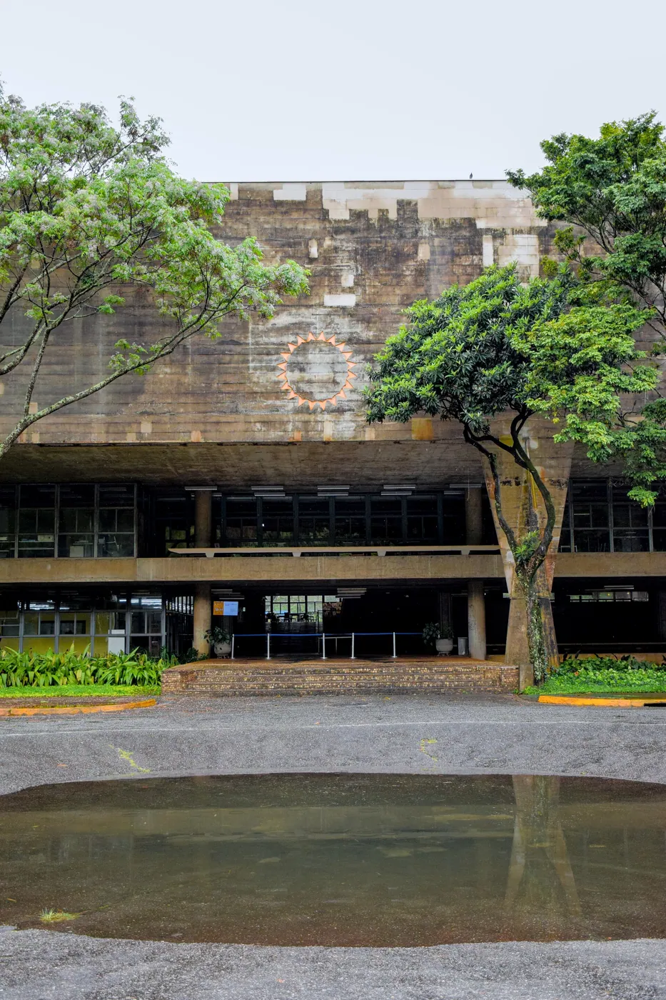
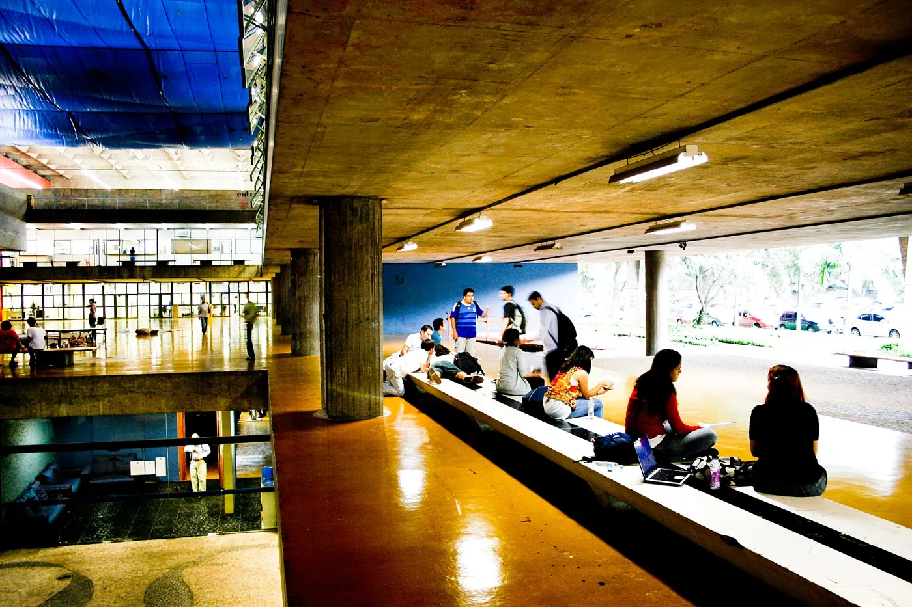
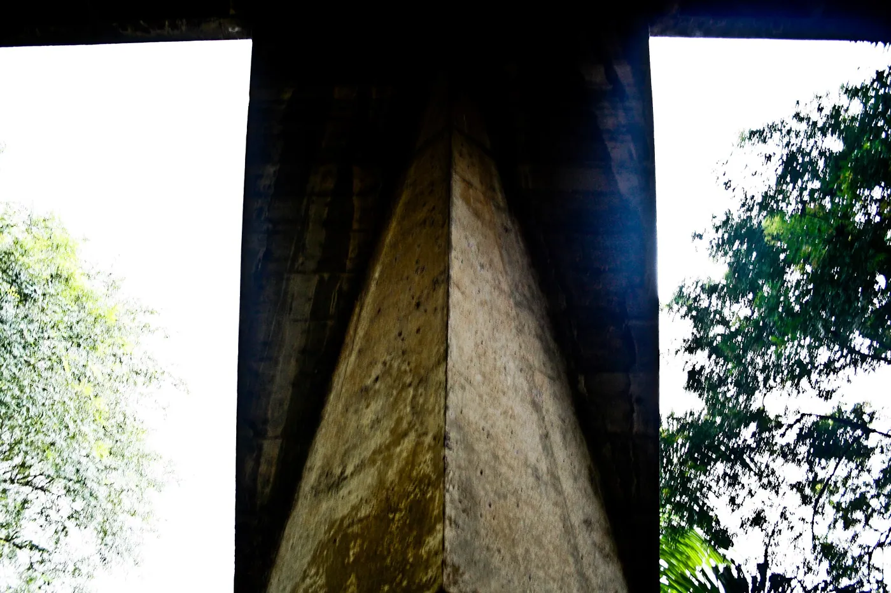
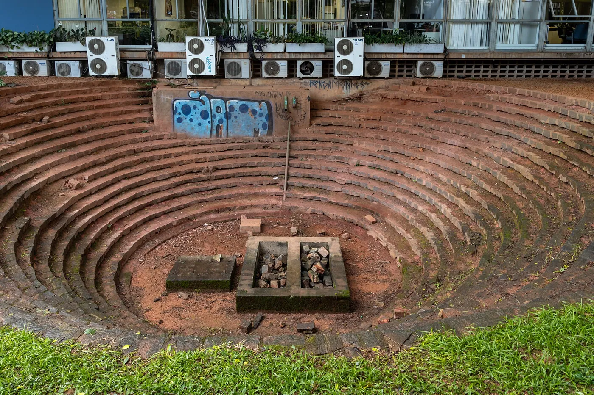

1/8 · Exterior · Rua do Lago, 876, Cidade UniversitáriaPhoto: Arte Fora do Museu · CC BY 2.0 · source2/8 · ExteriorPhoto: Photograph by Mike Peel ( www.mikepeel.net ) · CC BY-SA 4.0 · source

3/8 · Exterior · edifício tombado em São Paulo, São Paulo, BrasilPhoto: Thaismay · CC BY-SA 4.0 · source4/8 · Interior · Architecture and Urbanism College, University of São Paulo, São Paulo, BrazilPhoto: Photograph by Mike Peel ( www.mikepeel.net ) · CC BY-SA 4.0 · source5/8 · Interior · This is a photo of a monument in Brazil identified by the IDPhoto: Matheus Carvalho Teixeira · CC BY-SA 4.0 · source

6/8 · Interior · Rua do Lago, 876, Cidade UniversitáriaPhoto: Arte Fora do Museu · CC BY 2.0 · source

7/8 · Detail · Rua do Lago, 876, Cidade UniversitáriaPhoto: Arte Fora do Museu · CC BY 2.0 · source

8/8 · ContextPhoto: Photograph by Mike Peel ( www.mikepeel.net ) · CC BY-SA 4.0 · source


_01.jpg){kind=link}


,_Jo%C3%A3o_Batista_Vilanova_Artigas_(5878181762).jpg){kind=link}
,_Jo%C3%A3o_Batista_Vilanova_Artigas_(5878179748).jpg){kind=link}